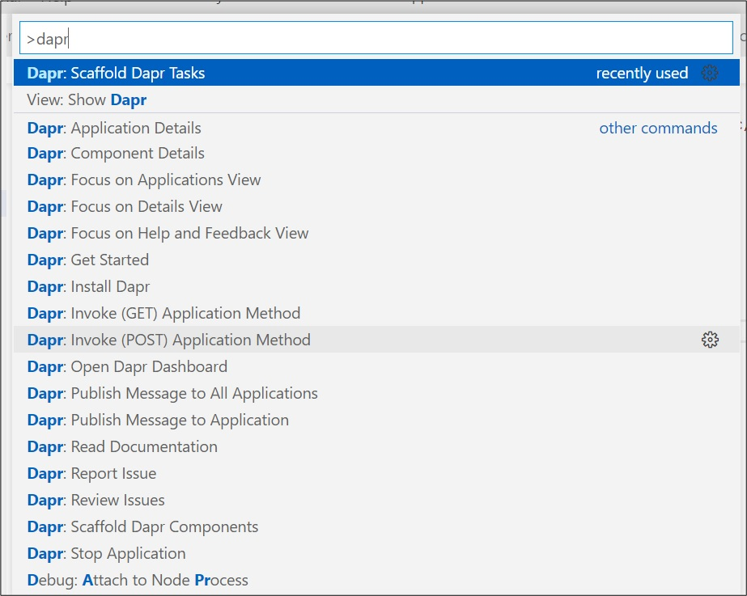

Debug and launch Dapr applications in VSCode
This page shows you how to configure VScode to run and debug multiple Dapr applications at same time.
Debug and launch Dapr applications in VSCode¶
We need to update VS code tasks.json and launch.json configuration files included in your workspace. Once completed you should be able to use the Run and Debug button on the activity bar within VS Code to launch all services to be able to debug them locally.
First we need to add a new launch configuration for the Backend Web API and Frontend Web App projects. To accomplish this, open file launch.json and add the two configurations shown below. Make sure you append the configurations below to the existing array instead of replacing what you have. This way you will preserve your existing configuration and simply add two new ones. For the complete launch.json file, you can check the file here.
{: .note } The configuration below assumes that you are using .net 6. If you are using a different .net version make sure you update the paths to use the correct version. For example if using .net 7 then change the path to say net7.0 instead of net6.0.
{"configurations":
[
{
"name": "Launch (backend api) with Dapr",
"type": "coreclr",
"request": "launch",
"preLaunchTask": "backend-api-dapr-debug",
"program": "${workspaceFolder}/TasksTracker.TasksManager.Backend.Api/bin/Debug/net6.0/TasksTracker.TasksManager.Backend.Api.dll",
"args": [],
"cwd": "${workspaceFolder}/TasksTracker.TasksManager.Backend.Api",
"stopAtEntry": false,
"serverReadyAction": {
"action": "openExternally",
"pattern": "\\bNow listening on:\\s+(https?://\\S+)"
},
"env": {
"ASPNETCORE_ENVIRONMENT": "Development"
},
"sourceFileMap": {
"/Views": "${workspaceFolder}/Views"
},
"postDebugTask": "daprd-down-backend-api"
},
{
"name": "Launch (web app) with Dapr",
"type": "coreclr",
"request": "launch",
"preLaunchTask": "webapp-ui-dapr-debug",
"program": "${workspaceFolder}/TasksTracker.WebPortal.Frontend.Ui/bin/Debug/net6.0/TasksTracker.WebPortal.Frontend.Ui.dll",
"args": [],
"cwd": "${workspaceFolder}/TasksTracker.WebPortal.Frontend.Ui",
"stopAtEntry": false,
"serverReadyAction": {
"action": "openExternally",
"pattern": "\\bNow listening on:\\s+(https?://\\S+)"
},
"env": {
"ASPNETCORE_ENVIRONMENT": "Development"
},
"sourceFileMap": {
"/Views": "${workspaceFolder}/Views"
},
"postDebugTask": "webapp-ui-daprd-down"
}
]}
Notice that we have a preLaunchTask and a postDebugTask which we need to define right now. Those tasks are Dapr tasks.
The Dapr VSCode extension we have previously installed helps us to define those pre and post debug tasks. To accomplish this, open the file tasks.json and click Ctrl + Shift + p, and type Dapr: Scaffold Dapr Tasks the Dapr VS Code extension will allow us to manage Dapr application and test it out in an easier way, the below image shows a full list of helper commands.

{kind=link}
Now we will add 4 tasks, for each application, there will be a task to support the preLaunch activity and the postDebug activity (Terminate/Exit Dapr Sidecar process), so open file tasks.json and add the tasks below:
{
"tasks": [
{
"appId": "tasksmanager-backend-api",
"appPort": [web api application port number found under properties->launchSettings.json. e.g. 7112],
"httpPort": 3500,
"grpcPort": 50001,
"appSsl": true,
"label": "backend-api-dapr-debug",
"type": "dapr",
"dependsOn": "build-backend-api",
// Uncomment this line after adding Azure Cosmos DB in module 4
//"componentsPath": "./components"
},
{
"appId": "tasksmanager-backend-api",
"label": "daprd-down-backend-api",
"type": "daprd-down"
},
{
"appId": "tasksmanager-frontend-webapp",
"appPort": [frontend application port number found under properties->launchSettings.json. e.g. 7112],
"httpPort": 3501,
"grpcPort": 50002,
"appSsl": true,
"label": "webapp-ui-dapr-debug",
"type": "dapr",
"dependsOn": "build-webapp-ui"
},
{
"appId": "tasksmanager-frontend-webapp",
"label": "webapp-ui-daprd-down",
"type": "daprd-down"
}
]}
- The tasks with the label
backend-api-dapr-debugwill invoke thedaprdtask. This task is similar to calling dapr run from CLI. - We are setting the appPort, httpPort, and grpcPort properties (grpcPort is needed in future modules when we start using the state manager building block. If you didn't set it, you might face a similar issue)
- We are setting the “componentsPath” property. This is needed when start working with the state manager, pub/sub, etc.
- We are setting the dependsOn property, so this means this task will fire after the dependsOn tasks complete successfully. We need to add those dependsOn tasks.
- The tasks with the label
daprd-down-backend-apiwill terminate the Dapr Sidecar process. This will be used for thepostDebugactivity in configuration.json. - For a complete list of available properties please check this link.
Next let's add the dependsOn tasks. Open tasks.json and add the tasks below:
{
"label": "build-backend-api",
"command": "dotnet",
"type": "process",
"args": [
"build",
"${workspaceFolder}/TasksTracker.TasksManager.Backend.Api/TasksTracker.TasksManager.Backend.Api.csproj",
"/property:GenerateFullPaths=true",
"/consoleloggerparameters:NoSummary"
],
"problemMatcher": "$msCompile"
},
{
"label": "build-webapp-ui",
"command": "dotnet",
"type": "process",
"args": [
"build",
"${workspaceFolder}/TasksTracker.WebPortal.Frontend.Ui/TasksTracker.WebPortal.Frontend.Ui.csproj",
"/property:GenerateFullPaths=true",
"/consoleloggerparameters:NoSummary"
],
"problemMatcher": "$msCompile"
}
Lastly, we need to add a compound launch property so we launch and debug both applications together. To accomplish this, open the file launch.json again and add the below array after the configuration array.
"compounds": [
{
"name": "RunAll with Dapr",
"configurations": [
"Launch (backend api) with Dapr",
"Launch (web app) with Dapr"
],
"stopAll": true
}
]
If all is done correctly, you should be able to see a debug configuration named RunAll with Dapr and you should be able to just hit F5, sit breakpoints and debug both applications locally in VS Code.
{kind=link}